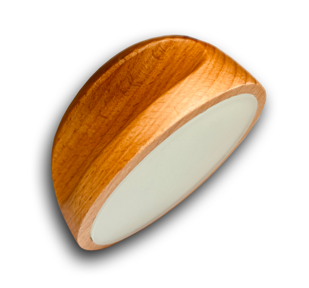

Épildou

Cristal de verre
Poignet ergonomique
Grâce à notre gomme
Épildou, vous en avez fini avec le feu du rasage, les poils
incarnés, l’effet peau de fraise ou peau de croco...
Notre gomme est composée d'une poignet en bois et d'un cristal , vous pouvez l'utiliser sur peau
sèche ou bien sous la
douche avec du savon .
Vous pouvez aussi l'utiliser sans problème durant votre bain pour
un pure
moment de détente .
Effectuer un mouvement circulaire tout en suivant une ligne droite, exercez une
pression de légère à modérée et... c’est tout !
Télécharger
gratuitement notre e-book pour avoir nos conseils d’utilisation et d’entretien de
notre Epildou.
Notre gomme Epildou a été testé par nous et notre exigence en termes de qualité est très
stricte afin de vous
offrir le meilleur.
Nous sommes persuadés que notre gomme Epildou vous plaira, que nous
vous
offrons une
garantie de 5 ans.
Fini les rasoirs jetables. Fini les déchets liés à la cire. Fini les déchets liés à la crème
épilatoire et ses produits
chimiques.
D’après une infographie du site Les petits calculs savants, chaque jour aux U.SA on jette 2
millions
de
rasoirs jetables.
Notre gomme épildou avec sa poignet en bois et son cristal, il a une durée optimale
d’utilisation de 3 à 5 ans.
En moyenne 5 000€ de dépense pour des rasoirs jetables et 40 000€ pour une épilation à la cire en institut [Source: Mujeo]
Originaire de Normandie, nous avons à cœur de changer notre mode de consommation afin d’être plus en
accord avec la nature.
Courant 2018 lorsque j’ai appris que j’étais enceinte de mon premier enfant, je me suis rendue compte
qu’il y avait
beaucoup de produits ménagers, cosmétiques et autres dans ma maison qui étaient dangereux et composés de
nombreux produits chimiques.
Je ne pouvais plus exposer mon bébé à de tel produits, je décidai donc de remplacer ses produits par
d’autres plus sain, plus écologique mais aussi plus durable et économique.
Nous travaillons en famille, nous sélectionnons des produits de qualités et qui puissent durer dans le
temps. Nous les
testons également en famille et nous débattons ensemble de son efficacité. Une fois ce test passé nous
vous le proposons à la vente.